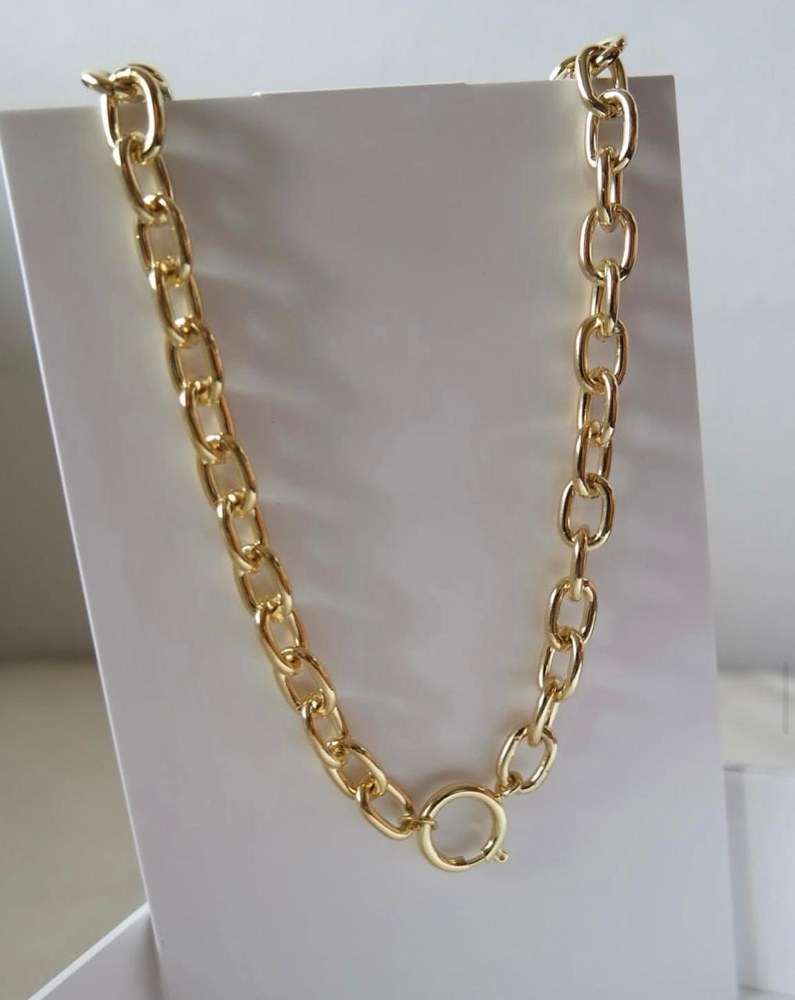
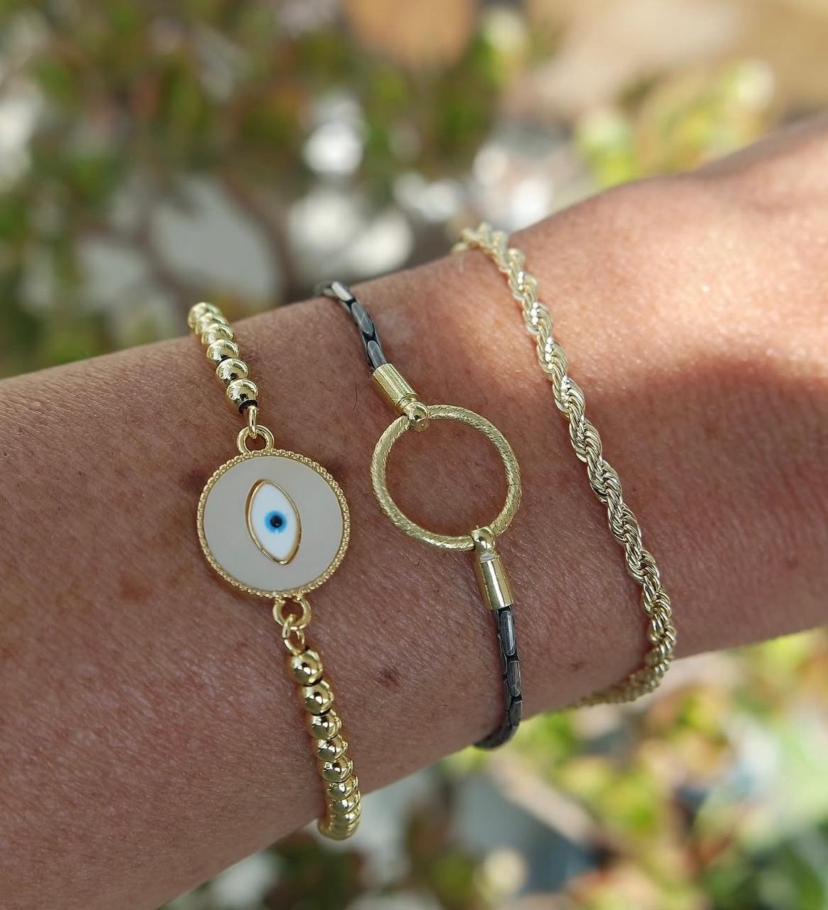
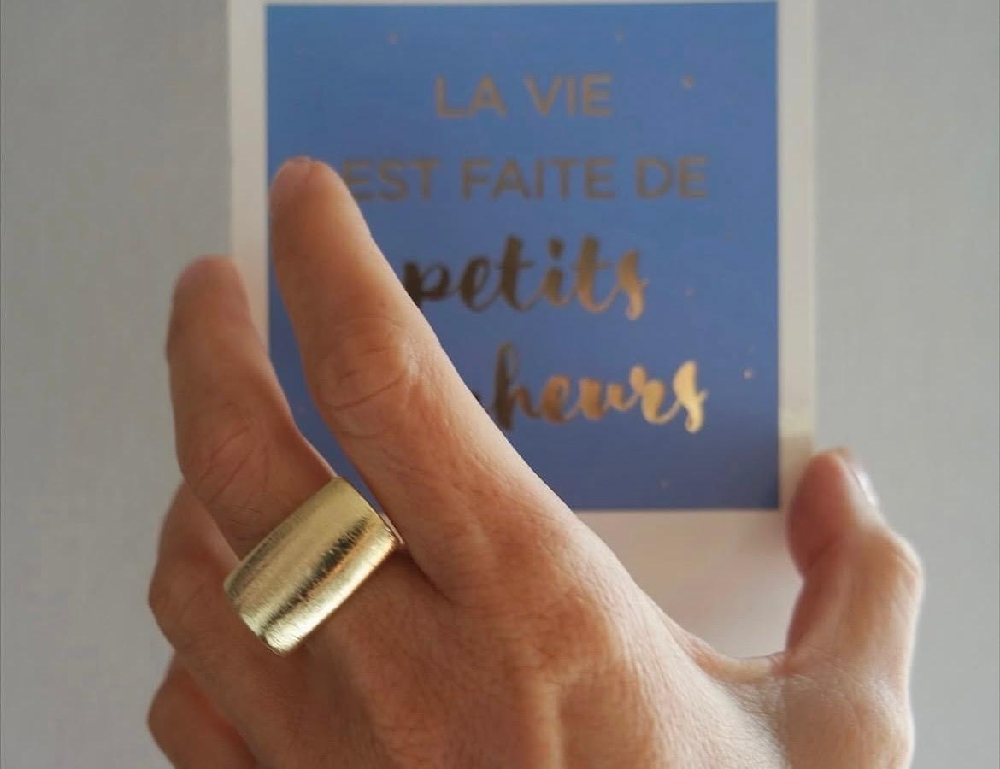
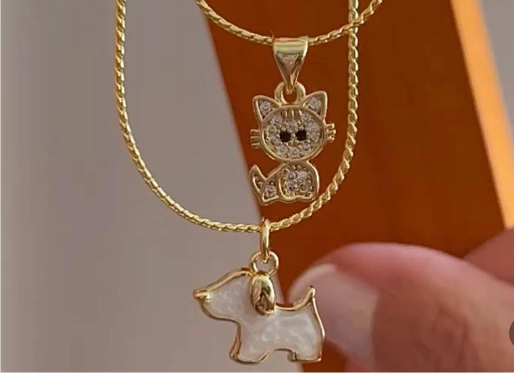

Accesorios femeninos
Detalles que se ven,
historias que se llevan.
Aros, collares, anillos, pulseras y dijes elegidos uno a uno: piezas cálidas, sobrias y fáciles de usar todos los días. Pocas unidades de cada diseño, para que lo tuyo siga siendo tuyo.
Inventario al día en las historias destacadas «Disponible»

Selección pieza por pieza
Revisamos cada accesorio antes de publicarlo: brillo parejo, buen cierre y acabados limpios.
Diseños atemporales
Tonos dorados y líneas simples que combinan igual de bien con un jean o con un vestido.
Pocas unidades
Series cortas: cuando una pieza sale de las historias «Disponible», es porque ya encontró dueña.
Atención personal
Escribes por Instagram y te respondemos nosotras: te ayudamos a elegir y a apartar tu pieza.
La colección
Piezas que hablan bajito y se notan siempre.
Detalles para recordarte cuánto vales.



Aros y aretes
Aros: el detalle que enmarca la cara.
Es el accesorio que más se nota y el que menos esfuerzo pide. En Zahir los tenemos en tono oro y plata, de argollas gruesas para llevar todos los días a modelos con dije desmontable para las ocasiones que piden un poco más de brillo.
- Argollas gruesas tipo hoop, en dorado y plateado
- Aros medianos livianos, cómodos de la mañana a la noche
Cómo comprar
Lo que hay hoy está en las historias «Disponible».
Mantenemos el inventario actualizado en las historias destacadas llamadas «Disponible» de nuestro perfil de Instagram. Si la pieza aparece ahí, es porque puedes llevártela.
- 1
Entra a @zahir_._ en Instagram.
- 2
Abre la historia destacada «Disponible», justo debajo de la biografía.
- 3
Envíanos por mensaje directo la pieza que te gustó y la apartamos para ti.
Síguenos
Novedades, combinaciones y el inventario del día. Todo lo que ves publicado se pide por mensaje directo.
La marca
Zahir
Hace visible lo que ya vive en ti:
tu esencia, tu estilo y el valor de elegirte.
«Elegimos poco, pero elegimos bien: cada pieza pasa por nuestras manos antes de llegar a las tuyas.» El equipo de Zahir
¿Lista para elegir la tuya?
Mira lo que hay hoy y aparta tu pieza.
La disponibilidad se actualiza en las historias destacadas «Disponible». Escríbenos por mensaje directo y te acompañamos en la elección.
Ver disponibilidad en Instagram